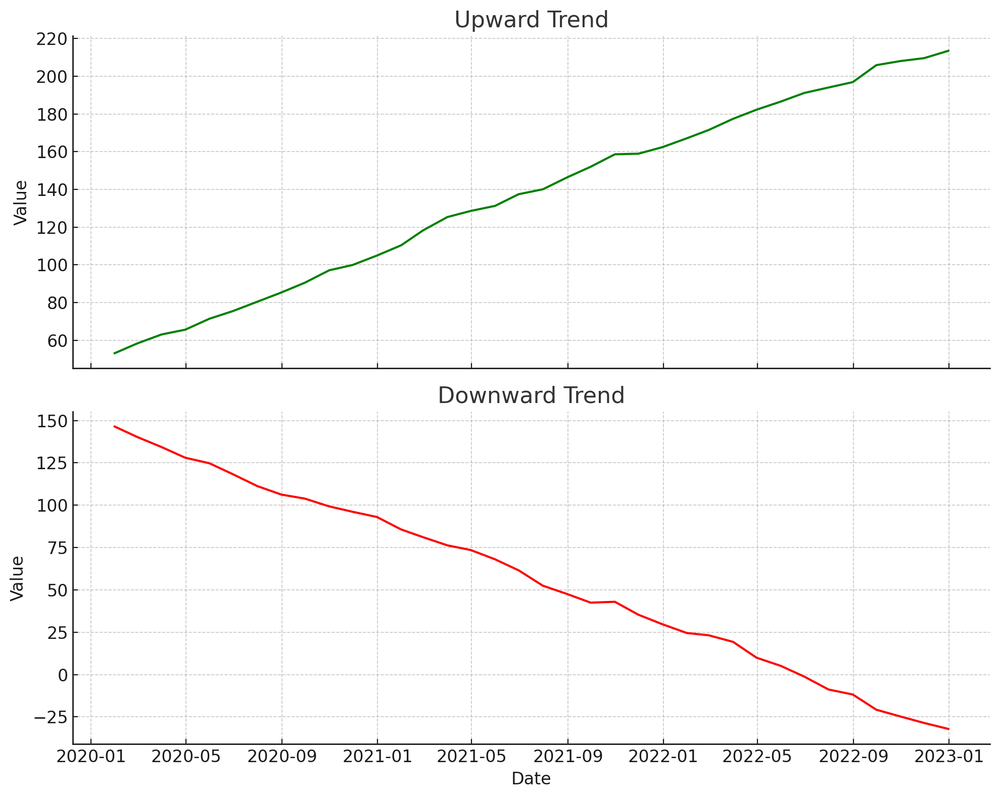
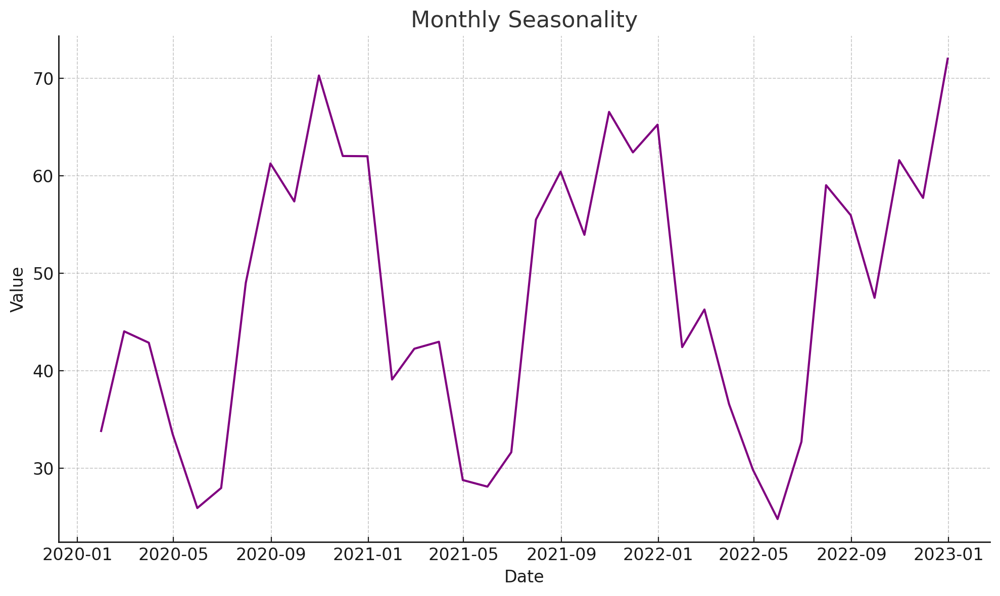
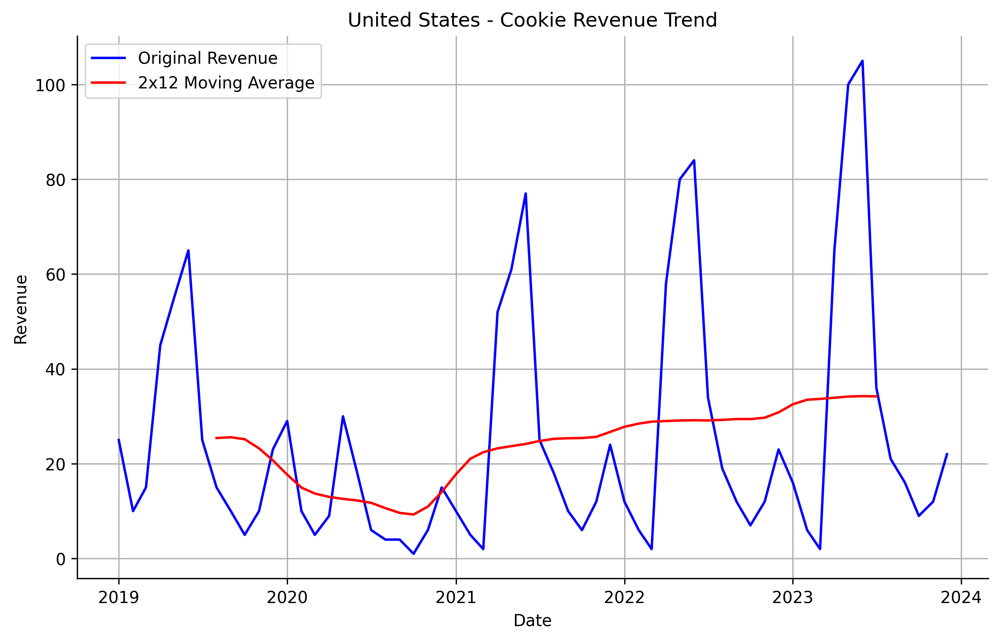
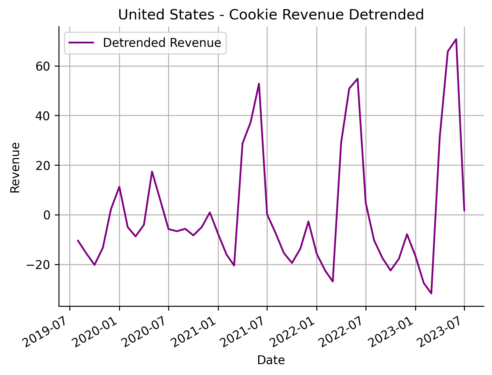
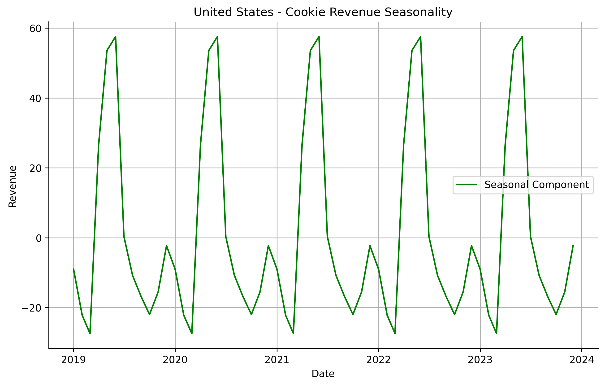
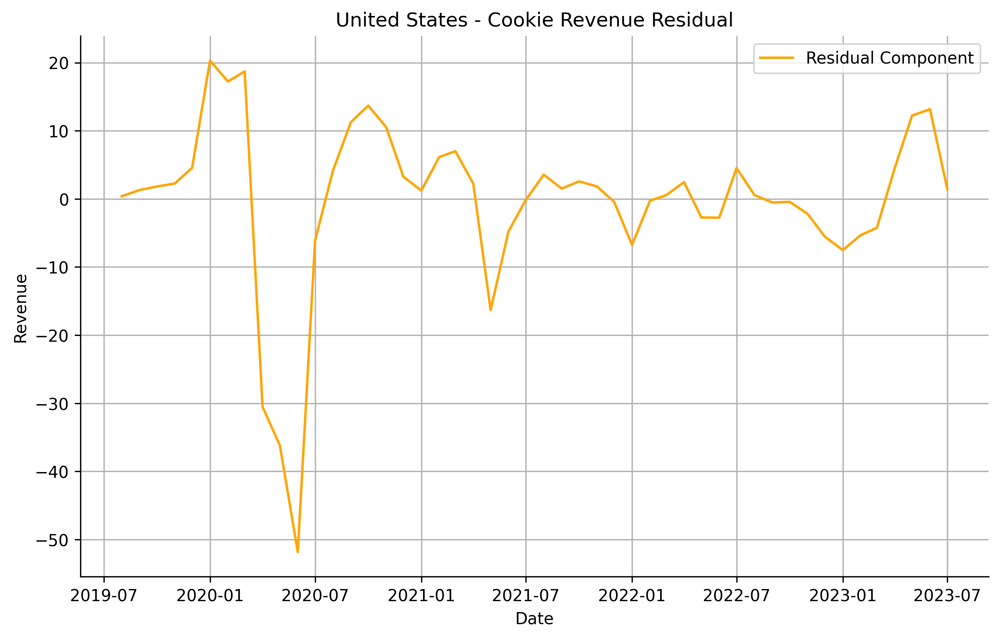

This post is part of the exploratory data analysis chapter within a larger learning series around time series forecasting fundamentals. Check out the main learning path to see other posts in the series.
The example data used in this series can be found here. You can also find the python code used in this post here.
Your Data is so Trendy
Every single time series you have ever seen has a trend and seasonality. If they don’t, then they are random white noise. A trend is just values steadily rising or falling over time. You could have a rising trend in some years, then a falling trend in others. Below is a chart with a strong trend but weak seasonality.

Seasonality just means that your data has a recurring seasonal pattern. For example your data could spike during the holiday season from Oct-Dec, then fall drastically from Jan-Jun. Your seasonality could also change over time. Below is a chart with strong seasonality but weak trend.

In order to better understand the trend and seasonal patterns in your data, you need to isolate them into separate components. This is done through a process called time series decomposition. This process breaks out a time series into three separate parts: trend, seasonality, and remainder. The remainder component is just parts of your time series that can’t be explained by the trend and seasonal component. Let’s try decomposing a time series from our example data set.
Breaking Out Trend and Seasonality with Additive Decomposition
We can isolate the trend component of a time series using simple methods like moving averages (MA). These are just simple averages over a span of time. Let’s take a time series from our example revenue data and create a moving average. In the first chart below we used a 2x12-MA. This moving average now isolates the trend of the time series. We can see a dip in trend around 2020 then a strong rebound going forward. The moving average doesn’t start and end at the same time as our time series, since we need a burn in period to start creating the averages. If we wanted to detrend the time series we can subtract the new trend series from our original revenue, shown in the second chart below.


Next we can get the seasonal component of our data. This is very straightforward. All we have to do is take our detrended series and calculate the average revenue for each month of the year. After getting the average value per month, we can divide by the total average across all months. This ensures that the seasonal values of each month add to zero. Then we repeat the final values per month across all years. The final result is shown below. Now we can see there is very strong seasonal patterns at certain times of the year. Some quarters have high sales, while others do not. This kind of repeatable pattern will be very important for us when it comes to training models.

Finally we can get the final piece of our decomposition, the remainder (aka residual) series. This is everything that couldn’t be explained by the trend and seasonal components. Simply take the original revenue time series, subtract the trend and seasonal components, and bam you have the remainder series.

STL Decomposition
The additive decomposition approach can work very well if your data has a linear trend and stable seasonality. But if the series is growing exponentially, or has changing seasonality, then more advanced methods are needed. This is where STL decomposition comes in. STL is an acronym for “Seasonal and Trend decomposition using Loess”, while loess is a smoothing method for estimating nonlinear relationships. This smoothing process allows for changing seasonality, a more complex understanding of the trend component, and more resistance to outliers. Here is the STL process broken down step by step.
- Extract Initial Seasonal Component
- First, STL identifies the seasonal pattern in the data. It does this by looking at the regular repeating cycles (e.g., monthly or weekly patterns).
- Using Loess smoothing, it calculates a rough seasonal pattern that captures these cycles.
- This step gives an initial estimate of what the seasonal pattern looks like.
- Remove Seasonality to Estimate the Trend
- After finding the initial seasonal component, STL subtracts it from the data to get a rough idea of the trend (the overall up or down direction).
- Loess smoothing is applied again to the deseasonalized data (data without seasonal patterns) to create a smooth trend line.
- Refine the Seasonal and Trend Components
- STL repeats the process in cycles, fine-tuning both the trend and seasonal estimates.
- Each cycle alternates between smoothing the seasonal component and the trend component, adjusting them with each pass to better fit the data.
- By repeating this process, STL allows the seasonal component to change over time if necessary and captures any evolving trends.
- Calculate the Remainder
- Once the trend and seasonal components are finalized, STL subtracts both from the original data. What’s left is the remainder component, representing the random, unpredictable part of the data.
- This remainder is what can’t be explained by the regular trend or seasonal patterns, capturing any noise or outliers.
Here is the output of a STL decomposition. Each component can be added together to get the original time series, just like additive decomposition.

Reading the Tea Leaves
Understanding the outputs of time series decomposition can be more of an art than science. The more you do it, the more your data intuition grows about what’s happening. Looking at the results of STL decomposition tells us a few things for our time series.
- There has been mostly a stable trend over the years, except for a strange dip in 2020.
- Seasonality is strong with repeating peaks and valleys across the years. But it does seem to be growing with each passing year.
- Most of the residual points hover around zero, which is ideal. Having the residual component have an average of zero and a constant standard deviation over time means the data is just white noise, or things that can’t be explained. We do see a large drop in 2020 though…
This analysis shows us that there is most likely an outlier in 2020 that seriously impacted our data. If you don’t have a guess as to what this might be than you might have been living under a rock the last decade. The impact is from COVID-19. Thankfully this impact can be taken care of later in our modeling process. But for now it’s good that we identify it and get the domain knowledge to know what could have caused it.
Final Thoughts
Decomposing a time series is often one of the first things an accomplished data scientist does before training any kind of machine learning model. Breaking the time series into its components allows us to understand the potential forces that is impacting the trend of the data and if there are any outliers in the data. Knowing this allows us to change our approach when training models. Ultimately leading to more accurate forecasts down the road.